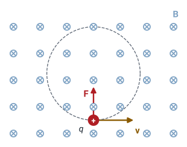
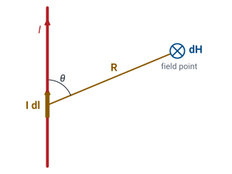
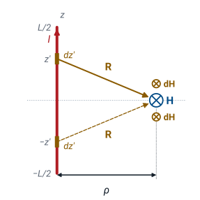
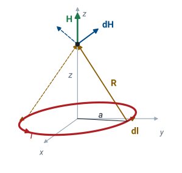
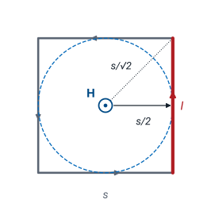
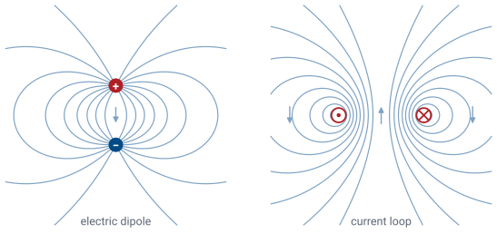
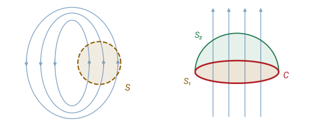

L28 - Magnetic Fields and Gauss’s Law for Magnetism#
Magnetic Fields and Gauss's Law for Magnetism
Today we find the magnetic field of a current, and show that its field lines always close.
Lesson 28 · Module 3: Magnetostatics · Maj Ellis · Dr. Neil Rogers
Learning Objectives
- I can apply the Biot-Savart law to simple magnetostatic systems to find the magnetic field at an observation point.
- I can articulate the meaning of both the integral form and point form of Gauss's Law for magnetism.
Module 2 started from one experimental law, Coulomb’s law, and built the electric field of any arrangement of charge. Module 3 does the same for steady currents. Today we define the magnetic field by the force it exerts on a moving charge, write the Biot-Savart law for the field of a small piece of current, and integrate it for a straight wire of finite length and for a circular loop. Then we look at the lines of the result. Unlike electric field lines, magnetic field lines have no ends, and Gauss’s law for magnetism states that fact as an equation, in integral and point forms.
Magnetic Force on a Moving Charge

A charge \(q\) moving with velocity \(\mathbf{v}\) through a magnetic field feels the force
Lesson 18 defined the electric field by the force on a charge at rest. A charge that moves feels a second force, and we use that force to define the magnetic flux density \(\mathbf{B}\). The force is proportional to the charge and to its speed, and it points perpendicular to both the velocity and \(\mathbf{B}\), which is what the cross product says. In the figure, \(\mathbf{B}\) points into the page and a positive charge moves to the right, so \(\hat{\mathbf{x}}\times(-\hat{\mathbf{z}}) = \hat{\mathbf{y}}\) and the force points up. Because the force is always perpendicular to the velocity, it does no work on the charge: it turns the charge’s path without changing its speed, and in a uniform field the path is the dashed circle. The permeability \(\mu\) of the material relates the magnetic field intensity \(\mathbf{H}\), in A/m, to \(\mathbf{B}\), in teslas (T = Wb/m²), just as \(\mathbf{D} = \epsilon\mathbf{E}\) related the two electric fields. In free space, and in nearly every material in this module except iron and its relatives, \(\mu = \mu_0\). Lesson 31 treats magnetic materials. For scale, the Earth’s field at the surface is about \(50\ \mu\)T.
Electrostatics and Magnetostatics
Electrostatics |
Magnetostatics |
|
|---|---|---|
Source |
charge \(dQ\) |
current element \(I\ d\mathbf{l}\) |
Field |
\(\mathbf{E}\) (V/m) |
\(\mathbf{H}\) (A/m) |
Flux density |
\(\mathbf{D} = \epsilon\mathbf{E}\) |
\(\mathbf{B} = \mu\mathbf{H}\) |
Field of a source |
Coulomb’s law |
Biot-Savart law |
Net flux out of a closed surface |
\(Q_\text{encl}\) |
\(0\) |
The two halves of statics run in parallel. In electrostatics the source is charge, and Coulomb’s law gives the field of each small piece of it. In magnetostatics the source is current, and the Biot-Savart law gives the field of each small piece of a current path. Each theory has a field and a flux density, linked by a material constant. The last row is where they differ. Lesson 20 showed that the flux of \(\mathbf{D}\) out of a closed surface equals the charge inside. The flux of \(\mathbf{B}\) out of any closed surface is zero, because no magnetic charge exists to put inside it.
The Biot-Savart Law

\(d\mathbf{H}\) is perpendicular to both \(d\mathbf{l}\) and \(\mathbf{R}\), with \(\vert d\mathbf{H}\vert \propto \sin\theta/R^2\).
A current element is a short length \(d\mathbf{l}\) of a current path, pointing along the current \(I\). The Biot-Savart law gives the field \(d\mathbf{H}\) that the element produces at a field point. Like Coulomb’s law, it is an experimental result, and this course does not derive it. The vector \(\mathbf{R}\) is the one from Lesson 18: it points from the source, the element, to the field point, and a prime marks source coordinates. The field falls off as \(1/R^2\), as the electric field of a point charge does, but its direction comes from a cross product. With the right thumb along the current, the fingers curl in the direction of \(d\mathbf{H}\). The magnitude of the cross product carries a factor \(\sin\theta\), where \(\theta\) is the angle between \(d\mathbf{l}\) and \(\mathbf{R}\), so an element produces no field along its own line and the most field broadside to it.
Current Elements
Current flows in |
Density |
Units |
Current element |
|---|---|---|---|
a filament |
\(I\) |
A |
\(I\ d\mathbf{l}\) |
a surface |
\(\mathbf{J}_s\) |
A/m |
\(\mathbf{J}_s\ ds\) |
a volume |
\(\mathbf{J}\) |
A/m² |
\(\mathbf{J}\ dv\) |
Lesson 18 described spread-out charge by densities, and current works the same way. Current in a thin wire is a filament with current \(I\). We describe current that flows in a thin sheet by the surface current density \(\mathbf{J}_s\), the current per unit width measured across the flow, and current through a volume by the volume current density \(\mathbf{J}\) of Lesson 27, the current per unit area. Each kind gives a current element, and any of the three can replace \(I\ d\mathbf{l}\) in the Biot-Savart law. The field of the whole current is the superposition of the fields of its elements, an integral over the current path. We write the integral around a closed path because a steady current has to flow in a closed circuit. When we compute the field of one straight segment, we are computing that segment’s share of the field, and the rest of the circuit adds its own.
A Finite Wire: Set Up

A straight wire on the \(z\) axis carries current \(I\) in the \(+z\) direction from \(z = -L/2\) to \(z = L/2\). We want \(\mathbf{H}\) at a distance \(\rho\) from the wire, in the plane \(z = 0\) that bisects it. This is the geometry of Lesson 18’s finite line charge, and we reuse its coordinates. The element at height \(z'\) is \(d\mathbf{l} = \hat{\mathbf{z}}\ dz'\), and the vector from it to the field point is \(\mathbf{R} = \rho\ \hat{\boldsymbol{\rho}} - z'\ \hat{\mathbf{z}}\), with \(R = \sqrt{\rho^2 + z'^2}\). In the cross product, \(\hat{\mathbf{z}}\times\hat{\boldsymbol{\rho}} = \hat{\boldsymbol{\phi}}\) and \(\hat{\mathbf{z}}\times\hat{\mathbf{z}} = 0\). Every element therefore produces a field along \(\hat{\boldsymbol{\phi}}\), circling the wire. For the line charge, the \(z\) components of the fields from \(z'\) and \(-z'\) canceled in pairs. Here no element produces a \(z\) component at all, and the fields from \(z'\) and \(-z'\) both point into the page at the field point and add, as the figure shows.
The Field of the Finite Wire
We substitute the cross product and \(R^3 = (\rho^2 + z'^2)^{3/2}\) into the Biot-Savart integral. The field point stays fixed while \(z'\) varies, so \(\hat{\boldsymbol{\phi}}\) and \(\rho\) come outside the integral. The integral that remains is the one Lesson 18 evaluated for the line charge. The substitution \(z' = \rho\tan\alpha\) gives \(dz' = \rho\sec^2\alpha\ d\alpha\) and \(\rho^2 + z'^2 = \rho^2\sec^2\alpha\), so the integrand becomes \(\cos\alpha/\rho^2\), whose antiderivative is \(\sin\alpha/\rho^2\). The right triangle with legs \(\rho\) and \(z'\) gives \(\sin\alpha = z'/\sqrt{\rho^2 + z'^2}\), which is the bracket. The two limits give equal and opposite values, so the bracket is twice its value at \(L/2\), and one factor of \(\rho\) cancels. The result has the same form as the line charge’s field, with \(I\) in place of \(\rho_\ell/\epsilon\), and a direction that circles the wire instead of pointing away from it.
The Infinite Wire
For \(L \gg \rho\), \(\sqrt{\rho^2 + L^2/4} \approx L/2\):
\(I = 1\) A at \(\rho = 1\) cm gives \(H = 15.9\) A/m and \(B = 20.0\ \mu\)T.
Close to a long wire, \(\rho^2\) is negligible beside \(L^2/4\), the square root becomes \(L/2\), and the length cancels. The field of an infinite wire circles it, with field lines that are circles centered on the wire, and it falls off as \(1/\rho\). The function of \(L/\rho\) is the same one as for the line charge, so the same rule applies: a centered wire 14 times longer than \(\rho\) gives a field within 1% of this result. A \(1\) A current makes \(20.0\ \mu\)T at \(1\) cm, comparable to the Earth’s field, so a compass held a centimeter from the wire turns noticeably. Lesson 29 finds this same field without an integral, with Ampere’s law.
The Field of a Wire and a Loop
The widget shows the plane that contains the current. With Finite wire selected, the field points into or out of the page, and each symbol’s size shows \(\vert\mathbf{H}\vert\) on a logarithmic scale. Drag the amber probe to read the field, and compare it with the long-wire formula \(I/2\pi\rho\) in the last readout. At the start, a \(20\) cm wire carrying \(1\) A gives \(2.85\) A/m at \(\rho = 5\) cm, 89% of the long-wire value. Lengthen the wire, or move the probe toward it, and the two readouts converge. With Circular loop selected, the loop crosses the page twice, and the lines are field lines of \(\mathbf{H}\). Every line passes through the loop and returns around the outside. With the probe on the axis, the last readout gives the on-axis result we derive next, and the two agree.
A Loop: Set Up

A circular loop of radius \(a\) lies in the plane \(z = 0\), centered on the \(z\) axis, and carries current \(I\) counterclockwise seen from above. We want the field at height \(z\) on the axis. The element at angle \(\phi'\) is \(d\mathbf{l} = \hat{\boldsymbol{\phi}}'\ a\ d\phi'\), using Lesson 17’s differential length along \(\hat{\boldsymbol{\phi}}\), and the primes on the unit vectors are a reminder that they belong to the element and turn as \(\phi'\) changes. The element sits at \(a\ \hat{\boldsymbol{\rho}}'\) and the field point at \(z\ \hat{\mathbf{z}}\), so \(\mathbf{R} = z\ \hat{\mathbf{z}} - a\ \hat{\boldsymbol{\rho}}'\), with \(R = \sqrt{a^2 + z^2}\) for every element. The cyclic order \(\hat{\boldsymbol{\rho}}, \hat{\boldsymbol{\phi}}, \hat{\mathbf{z}}\) gives \(\hat{\boldsymbol{\phi}}\times\hat{\mathbf{z}} = \hat{\boldsymbol{\rho}}\) and \(\hat{\boldsymbol{\phi}}\times\hat{\boldsymbol{\rho}} = -\hat{\mathbf{z}}\), which produce the two terms.
The Field on the Axis
At the center, \(z = 0\), the field is \(H = I/2a\).
Every element is the same distance from the field point, so \(R^3\) comes outside the integral with \(I\) and \(a\). Two terms remain. The radial term contains \(\hat{\boldsymbol{\rho}}'\), which turns with \(\phi'\), and Lesson 17 showed that its integral around a full circle is zero. The figure shows why: the element opposite any element produces a field whose radial part is equal and opposite, so the radial parts cancel in pairs and the axial parts add. The axial term is constant, and its integral is \(2\pi a\). For a loop of radius \(a = 5\) cm carrying \(1\) A, the field at the center is \(10.0\) A/m, or \(12.6\ \mu\)T. One radius above the center, at \(z = a\), the factor \((a^2/(a^2 + z^2))^{3/2}\) is \(2^{-3/2} = 0.354\), and the field drops to \(3.54\) A/m.
Far From the Loop
For \(z \gg a\), drop \(a^2\) beside \(z^2\):
A small loop is a magnetic dipole, and its field falls as \(1/z^3\).
Far from the loop, \(a^2 + z^2 \approx z^2\), and the denominator becomes \(2z^3\). Multiplying top and bottom by \(\pi\) collects the current and the area of the loop into the magnetic dipole moment \(m = I\pi a^2\), in A·m². The far field depends only on \(m\), so a loop with half the area and twice the current produces the same far field. The result has the same form as the on-axis field of the electric dipole in the Lesson 18 practice set, \(p/2\pi\epsilon z^3\), and the same \(1/z^3\) falloff. For the \(5\) cm loop at \(z = 50\) cm, ten radii away, the exact result gives \(9.85\) mA/m and the dipole approximation gives \(10.0\) mA/m, a difference of 1.5%. A bar magnet, and the Earth itself, have this same dipole field far away.
Worked Example: A Square Loop

A square loop of side \(s = 10\) cm carries \(I = 1\) A. Each side is a finite wire with \(L = s\) and \(\rho = s/2\):
Worked example — the field at the center of a square loop
The center of the square lies on the bisecting plane of every side, a distance \(s/2\) from each, so the finite-wire result applies to each side with \(L = s\) and \(\rho = s/2\). The square root is \(\sqrt{s^2/4 + s^2/4} = s/\sqrt{2}\), so one side contributes
By the right-hand rule, every side produces a field in the same direction at the center: out of the page for a current that runs counterclockwise. The four contributions add to \(2\sqrt{2}\ I/\pi s = 9.00\) A/m, or \(11.3\ \mu\)T. A circular loop that fits inside the square, with \(a = s/2 = 5\) cm, gives \(I/2a = 10.0\) A/m. The square has more wire and encloses more area, but its field at the center is 10% smaller, because the wire near the corners is farther from the center, up to \(s/\sqrt{2} = 7.07\) cm, and those elements see the center at a smaller \(\sin\theta\).
Closed Magnetic Field Lines

Electric lines start and end on charge; magnetic lines close on themselves.
Element on the \(z\) axis, \(d\mathbf{H} \propto \hat{\mathbf{z}}\times\mathbf{R}/R^3 = (-y,\ x,\ 0)/R^3\):
The figure draws the field lines of an electric dipole beside those of a small current loop. Far away, the two patterns match, since both are dipole fields. Near the sources they differ. Every electric field line starts on the positive charge and ends on the negative one. Every magnetic field line passes through the loop and returns around the outside, closing on itself, and none of them ends anywhere. The Biot-Savart law explains why, and we can show it for one element. Choose coordinates with the element at the origin, pointing along \(\hat{\mathbf{z}}\). With \(\mathbf{R} = (x, y, z)\) and \(R = \sqrt{x^2 + y^2 + z^2}\), the cross product is \(\hat{\mathbf{z}}\times\mathbf{R} = (-y, x, 0)\), so \(d\mathbf{H}\) has no \(z\) component and circles the element’s own line. Its divergence has two terms. The quotient rule with \(\partial R/\partial x = x/R\) gives \(\partial(-y/R^3)/\partial x = 3xy/R^5\), and with \(\partial R/\partial y = y/R\) it gives \(\partial(x/R^3)/\partial y = -3xy/R^5\). The terms cancel at every point away from the element. We can place any element on the \(z\) axis this way, so the field of every element has zero divergence, and so does their sum, the field of any current. A field with zero divergence everywhere has no point where lines start or end. No experiment has found an isolated magnetic charge, a magnetic monopole, that could start or end a line. Cutting a bar magnet in half produces two smaller magnets, each with both poles.
Gauss’s Law for Magnetism

Every field line that enters a closed surface also leaves it.
Compare Lesson 20: \(\oint_S \mathbf{D}\cdot d\mathbf{s} = Q_\text{encl}\).
The magnetic flux through a surface is \(\int \mathbf{B}\cdot d\mathbf{s}\), in webers, and it counts the field lines that cross the surface. Because magnetic field lines close on themselves, a line that enters a closed surface has to leave it somewhere, and the net flux out of the surface is zero. That is Gauss’s law for magnetism. Lesson 20’s Gauss’s law for \(\mathbf{D}\) has the enclosed charge on the right side. Here the right side is zero for every closed surface, because there is no magnetic charge to enclose. In the left panel, each line that enters \(S\) leaves it again. One consequence matters in Module 4. Take two open surfaces that share the same boundary curve, the flat cap \(S_1\) and the dome \(S_2\) on the curve \(C\) in the right panel. Together they form a closed surface, so the flux that enters through one equals the flux that leaves through the other. The flux through a circuit therefore depends only on the circuit, not on which surface we draw across it.
The Point Form
Check, infinite wire, \(\mathbf{B} = \hat{\boldsymbol{\phi}}\ \mu I/2\pi\rho\):
The divergence theorem of Lesson 17 turns the flux out of a closed surface into the volume integral of the divergence over the region inside it. The flux is zero for every closed surface, so the volume integral of \(\nabla\cdot\mathbf{B}\) is zero over every volume, however small and wherever it sits. The only way an integral can vanish over every volume is for the integrand to be zero everywhere, which is the argument Lesson 21 used to reach \(\nabla\cdot\mathbf{D} = \rho_v\). The result, \(\nabla\cdot\mathbf{B} = 0\), is the point form of Gauss’s law for magnetism: at no point does the magnetic field have a source or a sink. In a uniform material \(\mu\) is constant, so \(\nabla\cdot\mathbf{H} = 0\) as well. The infinite wire’s field passes the check: it has only a \(\phi\) component, and that component depends only on \(\rho\), so each of the three terms of the cylindrical divergence is zero.
Summary
Symbol / idea |
What it is |
Result |
|---|---|---|
Magnetic force |
Force on a charge moving through \(\mathbf{B}\) |
\(\mathbf{F} = q\ \mathbf{v}\times\mathbf{B}\) |
\(\mathbf{B}\), \(\mathbf{H}\), \(\mu\) |
Flux density (T), field intensity (A/m), permeability |
\(\mathbf{B} = \mu\mathbf{H}\); \(\mu_0 = 4\pi \times 10^{-7}\) H/m |
Biot-Savart law |
Field of a current element |
\(d\mathbf{H} = \dfrac{I\ d\mathbf{l}\times\mathbf{R}}{4\pi R^3}\) |
Current elements |
Filament, sheet, volume |
\(I\ d\mathbf{l}\), \(\mathbf{J}_s\ ds\), \(\mathbf{J}\ dv\) |
Finite wire, bisecting plane |
Length \(L\), distance \(\rho\) |
\(\dfrac{I L}{4\pi\rho\sqrt{\rho^2 + L^2/4}}\ \hat{\boldsymbol{\phi}}\) |
Infinite wire |
\(L \gg \rho\) |
\(\dfrac{I}{2\pi\rho}\ \hat{\boldsymbol{\phi}}\) |
Loop, on the axis |
Radius \(a\), height \(z\) |
\(\dfrac{I a^2}{2(a^2 + z^2)^{3/2}}\ \hat{\mathbf{z}}\); \(I/2a\) at the center |
Magnetic dipole |
Moment \(m = I\pi a^2\) |
far field on the axis \(m/2\pi z^3\) |
Gauss’s law for magnetism |
No magnetic charge; field lines close |
\(\oint \mathbf{B}\cdot d\mathbf{s} = 0\), \(\nabla\cdot\mathbf{B} = 0\) |
Practice
Where This Is Going
Lesson 29: Ampere’s law finds the infinite wire’s field with no integral.
Lesson 30: Ampere’s law for the coax, the solenoid, and the toroid, and the coax’s \(L'\).
Today the Biot-Savart law gave the field of a wire and a loop, one current element at a time. That method always works, but even a straight wire needs an integral along its length, and for the most symmetric currents there is a shortcut, as there was in Module 2. Lesson 29 introduces Ampere’s law, the magnetic counterpart of Gauss’s law, which finds the infinite wire’s field without an integral. Lesson 30 applies it to the coaxial cable, the solenoid, and the toroid, and derives the inductance per unit length \(L'\) of the coax that Lesson 6 quoted.
Before Lesson 29, read sections 7.4, 7.5, and 7.9 of Ellingson, Electromagnetics, Vol. 1.